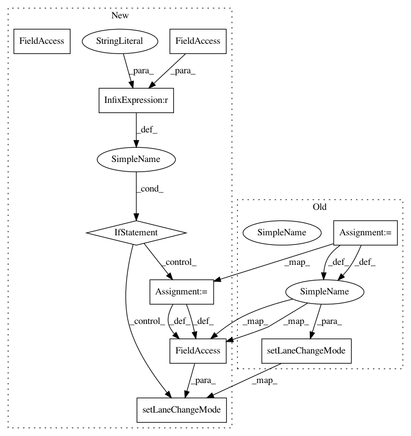

9dae176924fff06fda7629d0fd484750e443785a,flow/envs/bay_bridge/base.py,BayBridgeEnv,ramp_meter_lane_change_control,#BayBridgeEnv#,109
Before Change
cars_that_have_left = []
for veh_id in self.cars_before_ramp:
if self.k.vehicle.get_edge(veh_id) == EDGE_AFTER_RAMP_METER:
lane_change_mode = self.cars_before_ramp[veh_id][
"lane_change_mode"]
color = self.cars_before_ramp[veh_id]["color"]
self.k.vehicle.set_color(veh_id, color)
self.traci_connection.vehicle.setLaneChangeMode(
veh_id, lane_change_mode)
cars_that_have_left.append(veh_id)
for veh_id in cars_that_have_left:
After Change
cars_that_have_left = []
for veh_id in self.cars_before_ramp:
if self.k.vehicle.get_edge(veh_id) == EDGE_AFTER_RAMP_METER:
if self.simulator == "traci":
lane_change_mode = self.cars_before_ramp[veh_id][
"lane_change_mode"]
self.k.kernel_api.vehicle.setLaneChangeMode(
veh_id, lane_change_mode)
color = self.cars_before_ramp[veh_id]["color"]
self.k.vehicle.set_color(veh_id, color)
cars_that_have_left.append(veh_id)
In pattern: SUPERPATTERN
Frequency: 3
Non-data size: 9
Instances
Project Name: flow-project/flow
Commit Name: 9dae176924fff06fda7629d0fd484750e443785a
Time: 2019-01-05
Author: akreidieh@gmail.com
File Name: flow/envs/bay_bridge/base.py
Class Name: BayBridgeEnv
Method Name: ramp_meter_lane_change_control
Project Name: flow-project/flow
Commit Name: 9dae176924fff06fda7629d0fd484750e443785a
Time: 2019-01-05
Author: akreidieh@gmail.com
File Name: flow/envs/bottleneck_env.py
Class Name: BottleneckEnv
Method Name: apply_toll_bridge_control
Project Name: flow-project/flow
Commit Name: 9dae176924fff06fda7629d0fd484750e443785a
Time: 2019-01-05
Author: akreidieh@gmail.com
File Name: flow/envs/bottleneck_env.py
Class Name: BottleneckEnv
Method Name: ramp_meter_lane_change_control